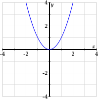
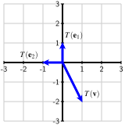
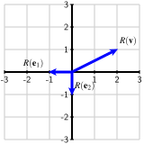

The past few sections introduced us to matrix-vector multiplication as a means of thinking geometrically about the solutions to a linear system. In particular, we rewrote a linear system as a matrix equation \(A\xvec = \bvec\) and developed the concepts of span and linear independence in response to our two fundamental questions.
In this section, we will explore how matrix-vector multiplication defines certain types of functions, which we call matrix transformations, similar to those encountered in previous algebra courses. In particular, we will develop some algebraic tools for thinking about matrix transformations and look at some motivating examples. In the next section, we will see how matrix transformations describe important geometric operations and how they are used in computer animation.
Preview Activity18.5.1.
We will begin by considering a more familiar situation; namely, the function \(f(x) = x^2\text{,}\) which takes a real number \(x\) as an input and produces its square \(x^2\) as its output.
What is the value of \(f(3)\text{?}\)
Can we solve the equation \(f(x) = 4\text{?}\) If so, is the solution unique?
Can we solve the equation \(f(x) = -10\text{?}\) If so, is the solution unique?
Sketch a graph of the function \(f(x)=x^2\) in Figure18.5.1
Figure18.5.1.Graph the function \(f(x)=x^2\) above.
We will now consider functions having the form \(g(x)=mx\text{.}\) Draw a graph of the function \(g(x) = 2x\) on the left in Figure18.5.2.
Figure18.5.2.Graphs of the function \(g(x)=2x\) and \(h(x) =
-\frac13 x\text{.}\)
Draw a graph of the function \(h(x) = -\frac13 x\) on the right of Figure18.5.2.
Remember that composing two functions means we use the output from one function as the input into the other; that is, \((g\circ h)(x) = g(h(x))\text{.}\) What function results from composing \((g\circ h)(x)\text{?}\)
Solution.
We find \(f(3) = 3^2 = 9\text{.}\)
If \(f(x)=x^2 = 4\text{,}\) then \(x = \pm2\) so there is not a unique solution.
There are no solutions to the equation \(f(x)=x^2=-10\text{.}\)

The graph is shown on the left below.
The graph is shown on the right above.
Composing the functions, we find that \(g(h(x)) =
g(-\frac13x)= -\frac23 x\text{.}\) We see that the composition is a new linear function whose slope is obtained by multiplying the slopes of \(g\) and \(h\text{.}\)
Subsection18.5.1Matrix transformations
In the preview activity, we considered familiar linear functions of a single variable, such as \(g(x) = 2x\text{.}\) We construct a function like this by choosing a number \(m\text{;}\) when given an input \(x\text{,}\) the output \(g(x) = mx\) is formed by multiplying \(x\) by \(m\text{.}\)
In this section, we will consider functions whose inputs are vectors and whose outputs are vectors defined through matrix-vector multiplication. That is, if \(A\) is a matrix and \(\xvec\) is a vector, the function \(T(\xvec) = A\xvec\) forms the product \(A\xvec\) as its output. Such a function is called a matrix transformation.
Definition18.5.3.
The matrix transformation associated to the matrix \(A\) is the function that assigns to the vector \(\xvec\) the vector \(A\xvec\text{;}\) that is, \(T(\xvec) = A\xvec\text{.}\)
Example18.5.4.
The matrix \(A =
\begin{bmatrix} 3 \amp -2 \\
1 \amp 2 \\
0 \amp 3
\end{bmatrix}\) defines a matrix transformation \(T(\xvec) =
A\xvec\) in the following way:
Notice that the input to \(T\) is a two-dimensional vector \(\twovec{x_1}{x_2}\) and the output is a three-dimensional vector \(\cthreevec{3x_1 - 2x_2}{x_1 +
2x_2}{3x_2}\text{.}\) As a shorthand, we will write
What is the dimension of the vectors \(\xvec\) that are inputs for \(T\text{?}\)
What is the dimension of the vectors \(T(\xvec)=A\xvec\) that are outputs?
If we describe this transformation as \(T:\real^n\to\real^m\text{,}\) what are the values of \(n\) and \(m\) and how do they relate to the shape of \(A\text{?}\)
Describe the vectors \(\xvec\) for which \(T(\xvec) = \zerovec\text{.}\)
If \(A\) is the matrix \(A=\left[\begin{array}{rr} \vvec_1 \amp \vvec_2
\end{array}\right]\text{,}\) what is \(T\left(\twovec10\right)\) in terms of the vectors \(\vvec_1\) and \(\vvec_2\text{?}\) What about \(T\left(\twovec{0}{1}\right)\text{?}\)
Suppose that \(A\) is a \(3\times 2\) matrix and that \(T(\xvec)=A\xvec\text{.}\) If
We seek a vector \(\xvec\) such that \(T(\xvec) = A\xvec=\twovec{3}{0}\text{.}\) We can solve this equation to find the unique solution \(\xvec=\twovec{2}{-1}\text{.}\)
For this matrix, we have \(T:\real^4\to\real^3\text{.}\) In general, if \(A\) is an \(m\times n\) matrix, \(T:\real^n\to\real^m\text{.}\)
If we solve the homogeneous equation \(A\xvec=\zerovec\text{,}\) we find that \(\xvec=x_4\fourvec{-3}{2}{-1}{1}\text{.}\)
\(T\left(\twovec{1}{0}\right) = \vvec_1\text{,}\) the first column of the matrix. Similarly, \(T\left(\twovec{0}{1}\right)\) gives the second column of the matrix.
The matrix is \(A=\left[
\begin{array}{rr}
3 \amp 2 \\
-1 \amp 2 \\
1 \amp -1 \\
\end{array}\right]\text{.}\)
Lets discuss a few of the issues that appear in this activity. First, notice that the shape of the matrix \(A\) and the dimension of the input vector \(\xvec\) must be compatible if the product \(A\xvec\) is to be defined. In particular, if \(A\) is an \(m\times n\) matrix, \(\xvec\) needs to be an \(n\)-dimensional vector, and the resulting product \(A\xvec\) will be an \(m\)-dimensional vector. For the associated matrix transformation, we therefore write \(T:\real^n\to\real^m\) meaning \(T\) takes vectors in \(\real^n\) as inputs and produces vectors in \(\real^m\) as outputs. For instance, if
Second, we can often reconstruct the matrix \(A\) if we only know some output values from its associated linear transformation \(T\) by remembering that matrix-vector multiplication constructs linear combinations. For instance, if \(A\) is an \(m\times2\) matrix \(A=\left[\begin{array}{rr} \vvec_1
\amp \vvec_2 \end{array}\right]\text{,}\) then
That is, we can find the first column of \(A\) by evaluating \(T\left(\twovec{1}{0}\right)\text{.}\) Similarly, the second column of \(A\) is found by evaluating \(T\left(\twovec{0}{1}\right)\text{.}\)
More generally, we will write the columns of the \(n\times
n\) identity matrix as
This means that the \(j^{th}\) column of \(A\) is found by evaluating \(T(\evec_j)\text{.}\) We record this fact in the following proposition.
Proposition18.5.6.
If \(T:\real^n\to\real^m\) is a matrix transformation given by \(T(\xvec) = A\xvec\text{,}\) then the matrix \(A\) has columns \(T(\evec_j)\text{;}\) that is,
Lets look at some examples and apply these observations.
To begin, suppose that \(T\) is the matrix transformation that takes a two-dimensional vector \(\xvec\) as an input and outputs \(T(\xvec)\text{,}\) the two-dimensional vector obtained by rotating \(\xvec\) counterclockwise by \(90^\circ\text{,}\) as shown in Figure18.5.7.

Figure18.5.7.The matrix transformation \(T\) takes two-dimensional vectors on the left and rotates them by \(90^\circ\) counterclockwise into the vectors on the right.
We will see in the next section that many geometric operations like this one can be performed by matrix transformations.
If we write \(T:\real^n\to\real^m\text{,}\) what are the values of \(m\) and \(n\text{,}\) and what is the shape of the associated matrix \(A\text{?}\)
If \(\vvec=\twovec{-2}{-1}\) as shown on the left in Figure18.5.7, use your matrix to determine \(T(\vvec)\) and verify that it agrees with that shown on the right of Figure18.5.7.
If \(\xvec=\twovec xy\text{,}\) determine the vector \(T(\xvec)\) obtained by rotating \(\xvec\) counterclockwise by \(90^\circ\text{.}\)
Suppose that we work for a company that makes baked goods, including cakes, doughnuts, and eclairs. The company operates two bakeries, Bakery 1 and Bakery 2. In one hour of operation,
Bakery 1 produces 10 cakes, 50 doughnuts, and 30 eclairs.
Bakery 2 produces 20 cakes, 30 doughnuts, and 30 eclairs.
If Bakery 1 operates for \(x_1\) hours and Bakery 2 for \(x_2\) hours, we will use the vector \(\xvec=\twovec{x_1}{x_2}\) to describe the operation of the two bakeries.
We would like to describe a matrix transformation \(T\) where \(\xvec\) describes the number of hours the bakeries operate and \(T(\xvec)\) describes the total number of cakes, doughnuts, and eclairs produced. That is, \(T(\xvec) = \threevec{y_1}{y_2}{y_3}\) where \(y_1\) is the number of cakes, \(y_2\) is the number of doughnuts, and \(y_3\) is the number of eclairs produced.
If \(T:\real^n\to\real^m\text{,}\) what are the values of \(m\) and \(n\text{,}\) and what is the shape of the associated matrix \(A\text{?}\)
We can determine the matrix \(A\) using Proposition18.5.6. For instance, \(T\left(\twovec10\right)\) will describe the number of cakes, doughnuts, and eclairs produced when Bakery 1 operates for one hour and Bakery 2 sits idle. What is this vector?
In the same way, determine \(T\left(\twovec01\right)\text{.}\) What is the matrix \(A\text{?}\)
If Bakery 1 operates for 120 hours and Bakery 2 for 180 hours, what is the total number of cakes, doughnuts, and eclairs produced?
Suppose that in one period of time, the company produces 5060 cakes, 14310 doughnuts, and 10470 eclairs. How long did each bakery operate?
Suppose that the company receives an order for a certain number of cakes, doughnuts, and eclairs. Can you guarantee that you can fill the order without having leftovers?
Solution.
Since both the inputs and the outputs of \(T\) are two-dimensional, it follows that \(T:\real^2\to\real^2\) and that \(A\) is a \(2\times2\) matrix.
We solve the equation \(T(\xvec) = A\xvec =
\threevec{5060}{14310}{10470}\) to obtain \(\xvec = \twovec{192}{157}.\)
No, you cannot guarantee this because the two columns of \(A\) cannot span \(\real^3\text{.}\) If we view an order received as a three-dimensional vector \(\bvec\text{,}\) then a solution to the equation \(A\xvec = \bvec\) tells us how long to operate the two bakeries to produce this order. However, since \(A\) is a \(3\times 2\) matrix, it must have a row without a pivot position, which means that the equation \(A\xvec = \bvec\) will be inconsistent for some vectors \(\bvec\text{.}\)
In these examples, we glided over an important point: how do we know these functions \(T:\real^n\to\real^m\) can be expressed as matrix transformations? We will take up this question in detail in the next section and not worry about it for now.
Subsection18.5.2Composing matrix transformations
It sometimes happens that we want to combine matrix transformations by performing one and then another. In the last activity, for instance, we considered the matrix transformation where \(T(\xvec)\) is the result of rotating the two-dimensional vector \(\xvec\) by \(90^\circ\text{.}\) Now suppose we are interested in rotating that vector twice; that is, we take a vector \(\xvec\text{,}\) rotate it by \(90^\circ\) to obtain \(T(\xvec)\text{,}\) and then rotate the result by \(90^\circ\) again to obtain \(T(T(\xvec))\text{.}\)
This process is called function composition and likely appeared in an earlier algebra course. For instance, if \(g(x) = 2x + 1\) and \(h(x) = x^2\text{,}\) the composition of these functions obtained by first performing \(g\) and then performing \(h\) is denoted by
Composing matrix transformations is similar. Suppose that we have two matrix transformations, \(T:\real^n\to\real^m\) and \(S:\real^m\to\real^p\text{.}\) Their associated matrices will be denoted by \(A\) and \(B\) so that \(T(\xvec) =
A\xvec\) and \(S(\xvec) = B\xvec\text{.}\) If we apply \(T\) to a vector \(\xvec\) to obtain \(T(\xvec)\) and then apply \(S\) to the result, we have
Notice that this implies that the composition \((S\circ T)\) is itself a matrix transformation and that the associated matrix is the product \(BA\text{.}\)
Proposition18.5.8.
If \(T:\real^n\to\real^m\) and \(S:\real^m\to\real^p\) are matrix transformations with associated matrices \(A\) and \(B\) respectively, then the composition \((S\circ
T)\) is also a matrix transformation whose associated matrix is the product \(BA\text{.}\)
Notice that the matrix transformations must be compatible if they are to be composed. In particular, the vector \(T(\xvec)\text{,}\) an \(m\)-dimensional vector, must be a suitable input vector for \(S\text{,}\) which means that the inputs to \(S\) must be \(m\)-dimensional. In fact, this is the same condition we need to form the product \(BA\) of their associated matrices, namely, that the number of columns of \(B\) is the same as the number of rows of \(A\text{.}\)
Activity18.5.4.
We will explore the composition of matrix transformations by revisiting the matrix transformations from Activity18.5.3.
Lets begin with the matrix transformation \(T:\real^2\to\real^2\) that rotates a two-dimensional vector \(\xvec\) by \(90^\circ\) to produce \(T(\xvec)\text{.}\) We saw in the earlier activity that the associated matrix is \(A = \begin{bmatrix}
0 \amp -1 \\
1 \amp 0 \\
\end{bmatrix}
\text{.}\) Suppose that we compose this matrix transformation with itself to obtain \((T\circ T)(\xvec) =
T(T(\xvec))\text{,}\) which is the result of rotating \(\xvec\) by \(90^\circ\) twice.
What is the matrix associated to the composition \((T\circ T)\text{?}\)
What is the result of rotating \(\vvec=\twovec{-2}{-1}\) twice?
Suppose that \(R:\real^2\to\real^2\) is the matrix transformation that rotates vectors by \(180^\circ\text{,}\) as shown in Figure18.5.9.

Figure18.5.9.The matrix transformation \(R\) takes two-dimensional vectors on the left and rotates them by \(180^\circ\) into the vectors on the right.
Use Proposition18.5.6 to find the matrix associated to \(R\) and explain why it is the same matrix associated to \((T\circ T)\text{.}\)
Write the two-dimensional vector \((T\circ
T)\left(\twovec xy\right)\text{.}\) How might this vector be expressed in terms of scalar multiplication and why does this make sense geometrically?
In the previous activity, we imagined a company that operates two bakeries. We found the matrix transformation \(T:\real^2\to\real^3\) where \(T\left(\twovec{x_1}{x_2}\right)\) describes the number of cakes, doughnuts, and eclairs when Bakery1 runs for \(x_1\) hours and Bakery 2 runs for \(x_2\) hours. The associated matrix is \(A = \begin{bmatrix}
10 \amp 20 \\
50 \amp 30 \\
30 \amp 30 \\
\end{bmatrix}
\text{.}\)
Suppose now that
Each cake requires 4 cups of flour and and 2 cups of sugar.
Each doughnut requires 1 cup of flour and 1 cup of sugar.
Each eclair requires 1 cup of flour and 2 cups of sugar.
We will describe a matrix transformation \(S:\real^3\to\real^2\) where \(S\left(\threevec{y_1}{y_2}{y_3}\right)\) is a two-dimensional vector describing the number of cups of flour and sugar required to make \(y_1\) cakes, \(y_2\) doughnuts, and \(y_3\) eclairs.
Use Proposition18.5.6 to write the matrix \(B\) associated to the transformation \(S\text{.}\)
If we make 1200 cakes, 2850 doughnuts, and 2250 eclairs, how many cups of flour and sugar are required?
Suppose that Bakery 1 operates for 75 hours and Bakery 2 operates for 53 hours. How many cakes, doughnuts, and eclairs are produced? How many cups of flour and sugar are required?
What is the meaning of the composition \((S\circ
T)\) and what is its associated matrix?
In a certain time interval, both bakeries use a total of 5800 cups of flour and 5980 cups of sugar. How long have the two bakeries been operating?
Solution.
The matrix is \(B=AA=A^2 = \begin{bmatrix}
-1 \amp 0 \\
0 \amp -1 \\
\end{bmatrix}
\text{.}\)
\(T\left(\twovec{75}{53}\right) =
\threevec{1810}{5340}{3840}\) and \(S\left(\threevec{1810}{5340}{3840}\right) =
\twovec{16430}{16640}\text{.}\)
\((S\circ T)\) takes as input a vector \(\xvec\) that records the number of hours both bakeries operate and outputs a vector \((S\circ T)(\xvec)\) that tells us the total number of cups of flour and sugar used. The associated matrix is \(BA=\begin{bmatrix}
120 \amp 140 \\
130 \amp 130 \\
\end{bmatrix}\text{.}\)
We want to find the vector \(\xvec\) for which \((S\circ T)(\xvec) = BA\xvec =
\twovec{5800}{5980}\text{.}\) Solving this equation gives \(\xvec=\twovec{32}{14}\text{.}\)
Subsection18.5.3Discrete Dynamical Systems
In Chapter20, we will give considerable attention to a specific type of matrix transformation, which is illustrated in the next activity.
Activity18.5.5.
Suppose we run a company that has two warehouses, which we will call \(P\) and \(Q\text{,}\) and a fleet of 1000 delivery trucks. Every morning, a delivery truck goes out from one of the warehouses and returns in the evening to one of the warehouses. It is observed that
70% of the trucks that leave \(P\) return to \(P\text{.}\) The other 30% return to \(Q\text{.}\)
50% of the trucks that leave \(Q\) return to \(Q\) and 50% return to \(P\text{.}\)
The distribution of trucks is represented by the vector \(\xvec=\twovec{x_1}{x_2}\) when there are \(x_1\) trucks at location \(P\) and \(x_2\) trucks at \(Q\text{.}\) If \(\xvec\) describes the distribution of trucks in the morning, then the matrix transformation \(T(\xvec)\) will describe the distribution in the evening.
Suppose that all 1000 trucks begin the day at location \(P\) and none at \(Q\text{.}\) How many trucks are at each location that evening? Using our vector representation, what is \(T\left(\ctwovec{1000}{0}\right)\text{?}\)
So that we can find the matrix \(A\) associated to \(T\text{,}\) what does this tell us about \(T\left(\twovec{1}{0}\right)\text{?}\)
In the same way, suppose that all 1000 trucks begin the day at location \(Q\) and none at \(P\text{.}\) How many trucks are at each location that evening? What is the result \(T\left(\ctwovec{0}{1000}\right)\) and what is \(T\left(\twovec01\right)\text{?}\)
Find the matrix \(A\) such that \(T(\xvec) =
A\xvec\text{.}\)
Suppose that there are 100 trucks at \(P\) and 900 at \(Q\) in the morning. How many are there at the two locations in the evening?
Suppose that there are 550 trucks at \(P\) and 450 at \(Q\) in the evening. How many trucks were there at the two locations that morning?
Suppose that all of the trucks are at location \(Q\) on Monday morning.
How many trucks are at each location Monday evening?
How many trucks are at each location Tuesday evening?
How many trucks are at each location Wednesday evening?
Suppose that \(S\) is the matrix transformation that transforms the distribution of trucks \(\xvec\) one morning into the distribution of trucks in the morning one week (seven days) later. What is the matrix that defines the transformation \(S\text{?}\)
Solution.
If 1000 trucks begin at \(P\text{,}\) that evening we find that 70% of them are at \(P\) with the remaining 30% at \(Q\text{.}\) Therefore, \(T\left(\ctwovec{1000}{0}\right) =
\twovec{700}{300}\text{.}\) Since \(T\left(\ctwovec{1000}{0}\right) =
1000A\twovec{1}{0}\text{,}\) we see that \(T\left(\twovec{1}{0}\right) = \twovec{0.7}{0.3}\text{.}\)
In the same way, we see that \(T\left(\ctwovec{0}{1000}\right) = \twovec{500}{500}\) so that \(T\left(\twovec{0}{1}\right) =
\twovec{0.5}{0.5}\text{.}\)
The columns of \(A\) are \(T\left(\twovec{1}{0}\right)\) and \(T\left(\twovec{0}{1}\right)\) so that \(A=\left[\begin{array}{rr}
0.7 \amp 0.5 \\
0.3 \amp 0.5 \\
\end{array}\right]
\text{.}\)
We solve \(T(\xvec) = A\xvec = \twovec{550}{450}\) to find \(\xvec=\twovec{250}{750}\text{.}\)
We denote the distribution of trucks Monday morning by \(\xvec_0 = \ctwovec{0}{1000}\text{.}\)
Monday evening, we have \(\xvec_1=A\xvec_0 =
\twovec{500}{500}\text{.}\)
Tuesday evening, we have \(\xvec_2=A\xvec_1 =
\twovec{600}{400}\text{.}\)
Wednesday evening, we have \(\xvec_3=A\xvec_2 =
\twovec{620}{380}\text{.}\)
The matrix is \(A^7 = \left[\begin{array}{rr}
0.625 \amp 0.625 \\
0.375 \amp 0.375 \\
\end{array}\right]
\text{.}\)
As we will see later, this type of situation occurs frequently. We have a vector \(\xvec\) that describes the state of some system; in this case, \(\xvec\) describes the distribution of trucks between the two locations at a particular time. Then there is a matrix transformation \(T(\xvec) = A\xvec\) that describes the state at some later time. We call \(\xvec\) the state vector and \(T\) the transition function, as it describes the transition of the state vector from one time to the next.
Beginning with an initial state \(\xvec_0\text{,}\) we would like to know how the state evolves over time. For instance,
We call this situation where the state of a system evolves from one time to the next according to the rule \(\xvec_{k+1}=A\xvec_k\) a discrete dynamical system. In Chapter20, we will develop a theory that enables us to make long-term predictions about the evolution of the state vector.
Subsection18.5.4Summary
This section introduced matrix transformations, functions that are defined by matrix-vector multiplication, such as \(T(\xvec) = A\xvec\) for some matrix \(A\text{.}\)
If \(A\) is an \(m\times n\) matrix, then \(T:\real^n\to\real^m\text{.}\)
The columns of the matrix \(A\) are given by evaluating the transformation \(T\) on the vectors \(\evec_j\text{;}\) that is,
The composition of matrix transformations corresponds to matrix multiplication.
A discrete dynamical system consists of a state vector \(\xvec\) along with a transition function \(T(\xvec) =
A\xvec\) that describes how the state vector evolves from one time to the next. Powers of the matrix \(A\) determine the long-term behavior of the state vector.
Exercises18.5.5Exercises
1.
Suppose that \(T\) is the matrix transformation defined by the matrix \(A\) and \(S\) is the matrix transformation defined by \(B\) where
If \(T:\real^n\to\real^m\text{,}\) what are the values of \(m\) and \(n\text{?}\) What values of \(m\) and \(n\) are appropriate for the transformation \(S\text{?}\)
Since \(A\) is a \(3\times3\) matrix, we have \(T:\real^3\to\real^3\text{.}\) Since \(B\) is a \(2\times3\) matrix, we have \(S:\real^3\to\real^2\text{.}\)
We have \(T(\xvec) = A\xvec = \zerovec\text{.}\) The reduced row echelon form of \(A\) is \(A \sim \left[\begin{array}{rrr}
1 \amp 0 \amp -2 \\
0 \amp 1 \amp 1 \\
0 \amp 0 \amp 0 \\
\end{array}\right]\text{.}\) Therefore, the solutions have the form \(\xvec=x_3\threevec{2}{-1}{1}\text{.}\)
This shows that \(\xvec=\threevec{-2}{-2}{0} +
x_3\threevec{2}{-1}{1}\text{.}\)
4.
Suppose \(T:\real^3\to\real^2\) is a matrix transformation with \(T(\evec_j) = \vvec_j\) where \(\vvec_1\text{,}\)\(\vvec_2\text{,}\) and \(\vvec_3\) are as shown in Figure18.5.10.
This shows that the solutions to \(T(\xvec) = A\xvec =
\zerovec\) are \(\xvec=x_3\threevec{1}{1}{1}\text{.}\)
5.
In Example18.5.5 and Example18.5.4, we wrote matrix transformations in terms of the components of \(T(\xvec)\text{.}\) This exercise makes use of that form.
Lets return to the example in Activity18.5.3 concerning the company that operates two bakeries. We used a matrix transformation with input \(\xvec\text{,}\) which recorded the amount of time the two bakeries operated, and output \(T(\xvec)\text{,}\) the number of cakes, doughnuts, and eclairs produced. The associated matrix is \(A=\begin{bmatrix}
10 \amp 20 \\
50 \amp 30 \\
30 \amp 30 \\
\end{bmatrix}
\text{.}\)
If \(\xvec=\twovec{x_1}{x_2}\text{,}\) write the output \(T(\xvec)\) as a three-dimensional vector in terms of \(x_1\) and \(x_2\text{.}\)
If Bakery 1 operates for \(x_1\) hours and Bakery 2 for \(x_2\) hours, how many cakes are produced?
Explain how you may have discovered this expression by considering the rates at which the two locations make cakes.
Suppose that a bicycle sharing program has two locations \(P\) and \(Q\text{.}\) Bicycles are rented from some location in the morning and returned to a location in the evening. Suppose that
60% of bicycles that begin at \(P\) in the morning are returned to \(P\) in the evening while the other 40% are returned to \(Q\text{.}\)
30% of bicycles that begin at \(Q\) are returned to \(Q\) and the other 70% are returned to \(P\text{.}\)
If \(x_1\) is the number of bicycles at location \(P\) and \(x_2\) the number at \(Q\) in the morning, write an expression for the number of bicycles at \(P\) in the evening.
Write an expression for the number of bicycles at \(Q\) in the evening.
Write an expression for \(T\left(\twovec{x_1}{x_2}\right)\text{,}\) the vector that describs the distribution of bicycles in the evening.
Use this expression to identify the matrix \(A\) associated to the matrix transformation \(T\text{.}\)
Answer.
We have \(T(\xvec) =
\threevec{10x_1+20x_2}{50x_1+20x_2}{30x_1+30x_2}
\text{.}\)
\(10x_1 + 20x_2\text{.}\)
Bakery 1 makes 10 cakes per hour and Bakery 2 makes 20.
The number of cakes produced is \(10x_1 + 20x_2\text{.}\)
This is consistent with the given information because Bakery 1 produces cakes at the rate of 10 cakes per hour so the number of cakes it produces is \(10x_1\text{.}\) In the same way, the number of cakes produced by Bakery 2 is \(20x_2\) giving a total of \(10x_1 + 20x_2\text{.}\)
Of the bicycles that begin at \(P\text{,}\) 60% of them end up at \(P\text{.}\) Therefore \(0.6x_1\) is the number of bicycles that begin at \(P\) and end at \(P\text{.}\) Similarly, 70% of the bicycles that begin at \(Q\) end up at \(P\) so this number is \(0.7x_2\text{.}\) Therefore, the total number of bicycles that end up at \(P\) is
This expression leads to \(A =
\begin{bmatrix}
0.6 \amp 0.7 \\
0.4 \amp 0.3 \\
\end{bmatrix}
\text{.}\)
6.
Determine whether the following statements are true or false and provide a justification for your response.
A matrix transformation \(T:\real^4\to\real^5\) is defined by \(T(\xvec) = A\xvec\) where \(A\) is a \(4\times5\) matrix.
If \(T:\real^3\to\real^2\) is a matrix transformation, then there are infinitely many vectors \(\xvec\) such that \(T(\xvec) = \zerovec\text{.}\)
If \(T:\real^2\to\real^3\) is a matrix transformation, then it is possible that every equation \(T(\xvec) = \bvec\) has a solution for every vector \(\bvec\text{.}\)
If \(T:\real^n\to\real^m\) is a matrix transformation, then the equation \(T(\xvec) =
\zerovec\) always has a solution.
Answer.
False
True
False
True
Solution.
False. The dimensions of \(A\) are \(5\times4\text{.}\)
True. The dimensions of \(A\) are \(2\times3\) so there must be a column without a pivot position.
False. The dimensions of \(A\) are \(3\times2\) so there must be a row without a pivot position.
True. The vector \(\xvec=\zerovec\) is always a solution.
7.
Suppose that a company has three plants, called Plants 1, 2, and 3, that produce milk \(M\) and yogurt \(Y\text{.}\) For every hour of operation,
Plant \(1\) produces 20 units of milk and 15 units of yogurt.
Plant \(2\) produces 30 units of milk and 5 units of yogurt.
Plant \(3\) produces 0 units of milk and 40 units of yogurt.
Suppose that \(x_1\text{,}\)\(x_2\text{,}\) and \(x_3\) record the amounts of time that the three plants are operated and that \(M\) and \(Y\) record the amount of milk and yogurt produced. If we write \(\xvec=\threevec{x_1}{x_2}{x_3}\) and \(\yvec = \twovec{M}{Y}\text{,}\) find the matrix \(A\) that defines the matrix transformation \(T(\xvec) =
\yvec\text{.}\)
Furthermore, suppose that producing each unit of
milk requires 5 units of electricity and 8 units of labor.
yogurt requires 6 units of electricity and 10 units of labor.
If we write the vector \(\zvec = \twovec{E}{L}\) to record the required amounts of electricity \(E\) and labor \(L\text{,}\) find the matrix \(B\) that defines the matrix transformation \(S(\yvec) =
\zvec\text{.}\)
If \(\xvec = \threevec{30}{20}{10}\) describes the amounts of time that the three plants are operated, how much milk and yogurt is produced? How much electricity and labor are required?
Find the matrix \(C\) that describes the matrix transformation \(R(\xvec)=\zvec\) that gives the required amounts of electricity and labor when the each plants is operated an amount of time given by the vector \(\xvec\text{.}\)
The first column of the matrix is \(T\left(\threevec{1}{0}{0}\right)=\twovec{20}{15}\text{.}\) This shows us that the matrix is \(A = \left[\begin{array}{rrr}
20 \amp 30 \amp 0 \\
15 \amp 5 \amp 40 \\
\end{array}\right]\text{.}\)
In the same way, the matrix is \(B = \left[\begin{array}{rr}
5 \amp 6 \\
8 \amp 10 \\
\end{array}\right]\text{.}\)
\(\twovec{M}{Y}=T\left(\threevec{30}{20}{10}\right) =
\twovec{1200}{950}\) and \(\twovec{E}{L}=S\left(T\left(\threevec{30}{20}{10}\right)\right)
= \twovec{11700}{19100}\text{.}\)
This gives the matrix \(A=\left[\begin{array}{rr}
1 \amp 2 \\
-2 \amp 0 \\
\end{array}\right]\text{.}\)
Then \(T\left(\twovec{4}{-5}\right) = A\twovec{4}{-5}
= \twovec{-6}{-8}\text{.}\)
9.
Suppose that two species \(P\) and \(Q\) interact with one another and that we measure their populations every month. We record their populations in a state vector \(\xvec = \twovec{p}{q}\text{,}\) where \(p\) and \(q\) are the populations of \(P\) and \(Q\text{,}\) respectively. We observe that there is a matrix
such that the matrix transformation \(T(\xvec)=A\xvec\) is the transition function describing how the state vector evolves from month to month. We also observe that, at the beginning of July, the populations are described by the state vector \(\xvec=\twovec{1}{2}\text{.}\)
What will the populations be at the beginning of August?
What were the populations at the beginning of June?
What will the populations be at the beginning of December?
What will the populations be at the beginning of July in the following year?
Answer.
\(\twovec{1.4}{3.1}\text{.}\)
\(\twovec{0.8}{1.2}\text{.}\)
\(\twovec{6.8}{15.9}\text{.}\)
\(\twovec{116.8}{272.5}\text{.}\)
Solution.
The initial state is the vector \(\xvec_0=\twovec{1}{2}\text{.}\)
At the beginning of August, we have \(\xvec_1 =
A\xvec_0 = \twovec{1.4}{3.1}\text{.}\)
At the beginning of June, we have \(A\xvec_{-1} =
\xvec_0\text{.}\) Solving this equation gives \(\xvec_{-1}=\twovec{0.8}{1.2}\text{.}\)
At the beginning of December, we have \(\xvec_5=A^5\xvec_0 = \twovec{6.8}{15.9}\text{.}\)
At the beginning of July in the following year, we have \(\xvec_{12} = A^{12}\xvec_0 = \twovec{116.8}{272.5}\text{.}\)
10.
Students in a school are sometimes absent due to an illness. Suppose that
95% of the students who attend school will attend school the next day.
50% of the students who are absent one day will be absent the next day.
We will record the number of present students \(p\) and the number of absent students \(a\) in a state vector \(\xvec=\twovec{p}{a}\) and note that that state vector evolves from one day to the next according to the transition function \(T:\real^2\to\real^2\text{.}\) On Tuesday, the state vector is \(\xvec=\ctwovec{1700}{100}\text{.}\)
Suppose we initially have 1000 students who are present and none absent. Find \(T\left(\ctwovec{1000}{0}\right)\text{.}\)
Suppose we initially have 1000 students who are absent and none present. Find \(T\left(\ctwovec{0}{1000}\right)\text{.}\)
Use the results of parts a and b to find the matrix \(A\) that defines the matrix transformation \(T\text{.}\)
If \(\xvec=\ctwovec{1700}{100}\) on Tuesday, how are the students distributed on Wednesday?
How many students were present on Monday?
How many students are present on the following Tuesday?
What happens to the number of students who are present after a very long time?
\(T(\xvec) = A\xvec = \twovec{1665}{135}\) meaning that 1665 students are present and 135 are absent.
We want to solve the equation \(T(\xvec) =
A\xvec=\twovec{1700}{100}\text{,}\) which gives \(\xvec =
\twovec{1778}{22}\text{.}\) There were 1778 students present on Monday.
The following Tuesday, the state will be described by the vector \(A^7\twovec{1700}{100} = \twovec{1636}{163}\text{.}\) This means that there were 1636 students present the following Tuesday.
If we compute \(A^k\twovec{1700}{100}\) for some large powers \(k\text{,}\) we find that there are about 1636 students present every day after a very long time.